Supplementary figures for manuscript (Supplementary Figures 1-3)
Calandra Grima
2026-10-27
Last updated: 2026-10-27
Checks: 7 0
Knit directory: amniosinglecell/
This reproducible R Markdown analysis was created with workflowr (version 1.7.2). The Checks tab describes the reproducibility checks that were applied when the results were created. The Past versions tab lists the development history.
Great! Since the R Markdown file has been committed to the Git repository, you know the exact version of the code that produced these results.
Great job! The global environment was empty. Objects defined in the global environment can affect the analysis in your R Markdown file in unknown ways. For reproduciblity it’s best to always run the code in an empty environment.
The command set.seed(20220125) was run prior to running
the code in the R Markdown file. Setting a seed ensures that any results
that rely on randomness, e.g. subsampling or permutations, are
reproducible.
Great job! Recording the operating system, R version, and package versions is critical for reproducibility.
Nice! There were no cached chunks for this analysis, so you can be confident that you successfully produced the results during this run.
Great job! Using relative paths to the files within your workflowr project makes it easier to run your code on other machines.
Great! You are using Git for version control. Tracking code development and connecting the code version to the results is critical for reproducibility.
The results in this page were generated with repository version c91a873. See the Past versions tab to see a history of the changes made to the R Markdown and HTML files.
Note that you need to be careful to ensure that all relevant files for
the analysis have been committed to Git prior to generating the results
(you can use wflow_publish or
wflow_git_commit). workflowr only checks the R Markdown
file, but you know if there are other scripts or data files that it
depends on. Below is the status of the Git repository when the results
were generated:
Ignored files:
Ignored: .DS_Store
Ignored: .Rhistory
Ignored: .Rproj.user/
Ignored: analysis/generate_site.R
Ignored: analysis/knit_docs.R
Ignored: analysis/run_as_job.R
Ignored: analysis/sccomp_draws_files/
Ignored: celltypist/.DS_Store
Ignored: data/
Ignored: excluded_analysis/
Ignored: output/
Ignored: renv/.DS_Store
Ignored: renv/library/
Ignored: renv/staging/
Ignored: sccomp_draws_files/
Untracked files:
Untracked: AmnioSC_Manuscript_Claude/
Untracked: claude_log/
Note that any generated files, e.g. HTML, png, CSS, etc., are not included in this status report because it is ok for generated content to have uncommitted changes.
These are the previous versions of the repository in which changes were
made to the R Markdown
(analysis/AmnioSC_additional_supp_figures_1.Rmd) and HTML
(docs/AmnioSC_additional_supp_figures_1.html) files. If
you’ve configured a remote Git repository (see
?wflow_git_remote), click on the hyperlinks in the table
below to view the files as they were in that past version.
| File | Version | Author | Date | Message |
|---|---|---|---|---|
| Rmd | c91a873 | Calandra Grima | 2026-10-27 | wflow_publish(here("analysis", "AmnioSC_additional_supp_figures_1.Rmd")) |
| html | 36d4d4f | Calandra Grima | 2026-10-21 | Build site. |
| Rmd | c8dbd89 | Calandra Grima | 2026-10-21 | wflow_publish(here("analysis", "AmnioSC_additional_supp_figures_1.Rmd")) |
| html | 650c8b0 | Calandra Grima | 2026-10-21 | Build site. |
| html | 57bbaf8 | Calandra Grima | 2026-10-13 | Build site. |
| Rmd | 534c395 | Calandra Grima | 2026-10-13 | wflow_publish(here("analysis", "AmnioSC_additional_supp_figures_1.Rmd")) |
| html | 4c2ee5e | Calandra Grima | 2026-10-02 | Build site. |
| Rmd | ad2d6d2 | Calandra Grima | 2026-10-02 | wflow_publish(here("analysis", "AmnioSC_additional_supp_figures_1.Rmd")) |
| html | 34539a7 | Calandra Grima | 2026-09-30 | Build site. |
| Rmd | 39cbd51 | Calandra Grima | 2026-09-30 | wflow_publish(here("analysis", "AmnioSC_additional_supp_figures_1.Rmd")) |
library(Seurat)
library(SeuratObject)
library(clustree)
library(scater)
library(stringr)
library(ggplot2)
library(ggbeeswarm)
library(cowplot)
library(patchwork)
library(egg)
library(workflowr)
library(here)
library(sessioninfo)
library(viridis)
library(Polychrome)
library(magick)
library(png)
library(ggplot2)
library(grid)
library(limma)
library(edgeR)
library(ggtext)
library(ggrepel)
library(tidyverse)
library(ggplotify)
source(here("code", "helper_functions.R"))
source(here("code", "load_colour_schemes.R"))
source(here("code", "limma_barcodeplot_custom.R"))
# using customised version of the barcode plot function to make the font size bigger and change shade of background colour
# as cannot pass cex arguments to the original barcodeplot function
# https://support.bioconductor.org/p/119752/
RERUN_ALL <- FALSEPrepare colour schemes for the plots
ALL_DONORS_COLOURS <- ALL_DONORS_COLOURS[-3]
ALL_DONORS_COLOURS <- ALL_DONORS_COLOURS[1:5]
DONOR.PAPER <- c("AF_1", "AF_2", "AF_3", "AF_4", "AF_5", "AF_6", "AF_7",
"AF_1.optref", "AF_2.optref", "AF_3.optref", "AF_4.optref", "AF_5.optref")
names(DONOR.PAPER) <- c("1AF", "2AF", "4AF", "5AF", "6AF", "7AF", "8AF",
"1AF_optref", "2AF_optref", "4AF_optref", "5AF_optref", "6AF_optref")
names(ALL_DONORS_COLOURS) <- DONOR.PAPER[names(ALL_DONORS_COLOURS)]
ALL_DONORS_COLOURS <- c(ALL_DONORS_COLOURS[1:5],
"darkorange3", "mediumpurple",
"darkgreen", "deeppink2", "dodgerblue")
names(ALL_DONORS_COLOURS) <- c(names(ALL_DONORS_COLOURS)[1:5],
"AF_1.optref", "AF_2.optref",
"AF_3.optref", "AF_4.optref", "AF_5.optref")1 Supplementary Figure 1
1.1 Generate the plots
The seu.before_qc object was generated on this page.
seu.before_qc <- readRDS(here("data", "workflow", "AmnioSC_ALL_optimised_ref_comparison.emptyDrops_merged.Seurat.rds"))
seu.before_qc$Sample <- unname(SAMPLE.PAPER[seu.before_qc$Sample])
seu.before_qc$Donor <- unname(DONOR.PAPER[seu.before_qc$Donor])seu.before_qc@meta.data %>%
ggplot(aes(x = Donor,
y = nCount_RNA)) +
geom_violin(scale = "area") +
geom_quasirandom(aes(color = Donor)) +
scale_y_log10() +
theme_linedraw(12) +
scale_colour_manual(values = ALL_DONORS_COLOURS) +
no_legend +
rotate_x_labels +
ggtitle("QC metrics by donor (before quality control filtering)") +
ylab("Library size") + xlab(" ") +
theme(plot.title = element_markdown(face = "bold", size = 24, family = "arial"),
axis.title = element_text(size = 22, family = "arial", face = "bold"),
axis.text = element_text(size = 18, family = "arial")) -> supp_fig1.before_qc_sum
seu.before_qc@meta.data %>%
ggplot(aes(x = Donor,
y = nFeature_RNA)) +
geom_violin(scale = "area") +
geom_quasirandom(aes(color = Donor)) +
scale_y_log10() +
theme_linedraw(12) +
scale_colour_manual(values = ALL_DONORS_COLOURS) +
no_legend +
rotate_x_labels +
ylab("# of detected genes") +
theme(plot.title = element_markdown(face = "bold", size = 24, family = "arial"),
axis.title = element_text(size = 22, family = "arial", face = "bold"),
axis.text = element_text(size = 18, family = "arial")) -> supp_fig1.before_qc_detected
seu.before_qc@meta.data %>%
ggplot(aes(x = Donor,
fill = Donor)) +
geom_bar() +
geom_text(stat='count', aes(label=after_stat(count)), vjust=0.5, hjust = -0.2, size = 6, angle = 90) +
theme_linedraw(12) +
scale_fill_manual(values = ALL_DONORS_COLOURS) +
no_legend +
rotate_x_labels + xlab(" ") +
ylab("# of cells") + ylim(0, 11000) +
theme(plot.title = element_markdown(face = "bold", size = 24, family = "arial"),
axis.title = element_text(size = 22, family = "arial", face = "bold"),
axis.text = element_text(size = 18, family = "arial")) -> supp_fig1.before_qc_count
supp_fig1.before_qc_sum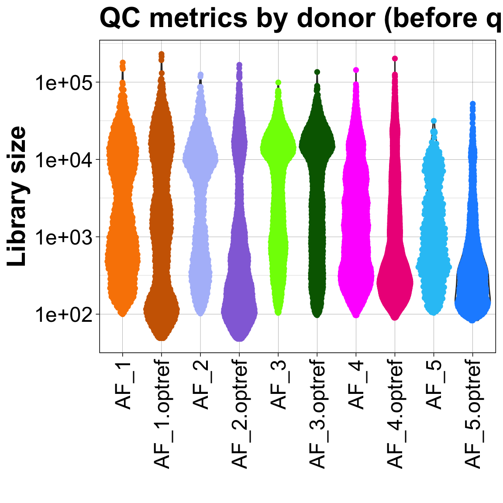
| Version | Author | Date |
|---|---|---|
| 34539a7 | Calandra Grima | 2026-09-30 |
supp_fig1.before_qc_detected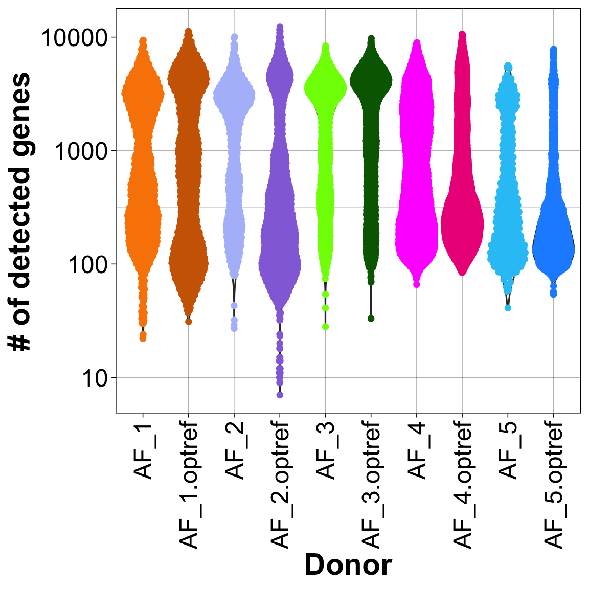
| Version | Author | Date |
|---|---|---|
| 34539a7 | Calandra Grima | 2026-09-30 |
supp_fig1.before_qc_count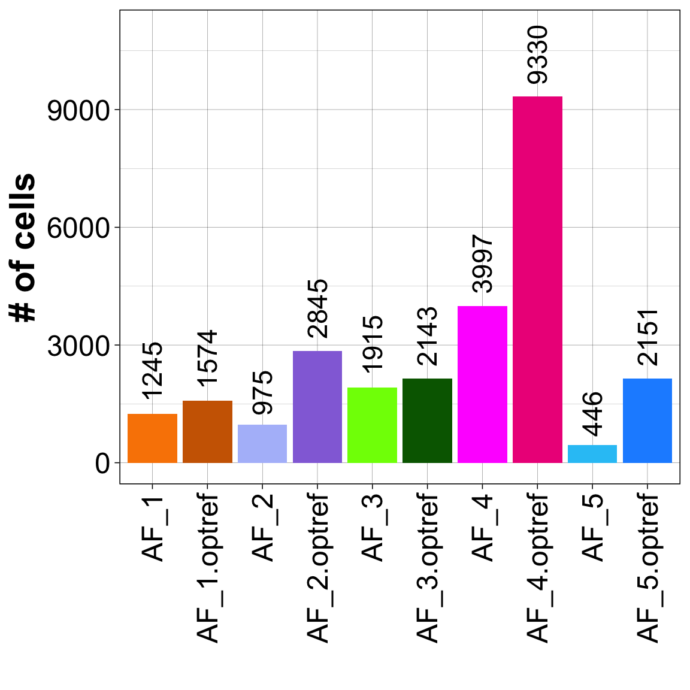
| Version | Author | Date |
|---|---|---|
| 34539a7 | Calandra Grima | 2026-09-30 |
saveRDS(supp_fig1.before_qc_sum, here("output", "supp_figures", "supp_fig1.before_qc_sum.RDS"))
saveRDS(supp_fig1.before_qc_detected, here("output", "supp_figures", "supp_fig1.before_qc_detected.RDS"))
saveRDS(supp_fig1.before_qc_count, here("output", "supp_figures", "supp_fig1.before_qc_count.RDS"))The seu.after_qc object was generated on this page.
seu.after_qc <- readRDS(here("data", "workflow", "AmnioSC_ALL_optimised_ref_comparison.Preprocessed_merged.Seurat.rds"))
seu.after_qc$Sample <- unname(SAMPLE.PAPER[seu.after_qc$Sample])
seu.after_qc$Donor <- unname(DONOR.PAPER[seu.after_qc$Donor])seu.after_qc@meta.data %>%
ggplot(aes(x = Donor,
y = nCount_RNA)) +
geom_violin(scale = "area") +
geom_quasirandom(aes(color = Donor)) +
scale_y_log10() +
theme_linedraw(12) +
scale_colour_manual(values = ALL_DONORS_COLOURS) +
no_legend +
rotate_x_labels +
ggtitle("QC metrics by donor (after quality control filtering)") +
ylab("Library size") + xlab(" ") +
theme(plot.title = element_markdown(face = "bold", size = 24, family = "arial"),
axis.title = element_text(size = 22, family = "arial", face = "bold"),
axis.text = element_text(size = 18, family = "arial")) -> supp_fig1.after_qc_sum
seu.after_qc@meta.data %>%
ggplot(aes(x = Donor,
y = nFeature_RNA)) +
geom_violin(scale = "area") +
geom_quasirandom(aes(color = Donor)) +
scale_y_log10() +
theme_linedraw(12) +
scale_colour_manual(values = ALL_DONORS_COLOURS) +
no_legend +
rotate_x_labels +
ylab("# of detected genes") +
theme(plot.title = element_markdown(face = "bold", size = 24, family = "arial"),
axis.title = element_text(size = 22, family = "arial", face = "bold"),
axis.text = element_text(size = 18, family = "arial")) -> supp_fig1.after_qc_detected
seu.after_qc@meta.data %>%
ggplot(aes(x = Donor,
fill = Donor)) +
geom_bar() +
geom_text(stat='count', aes(label=after_stat(count)), vjust=0.5, hjust = -0.2, size = 6, angle = 90) +
theme_linedraw(12) +
scale_fill_manual(values = ALL_DONORS_COLOURS) +
no_legend +
rotate_x_labels + xlab(" ") +
ylab("# of cells") + ylim(0, 3500) +
theme(plot.title = element_markdown(face = "bold", size = 24, family = "arial"),
axis.title = element_text(size = 22, family = "arial", face = "bold"),
axis.text = element_text(size = 18, family = "arial")) -> supp_fig1.after_qc_count
supp_fig1.after_qc_sum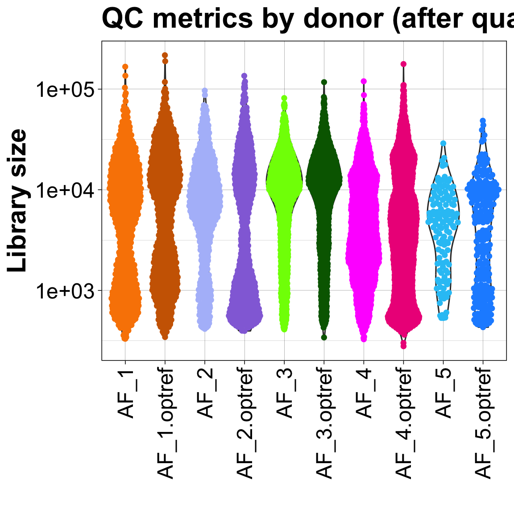
| Version | Author | Date |
|---|---|---|
| 34539a7 | Calandra Grima | 2026-09-30 |
supp_fig1.after_qc_detected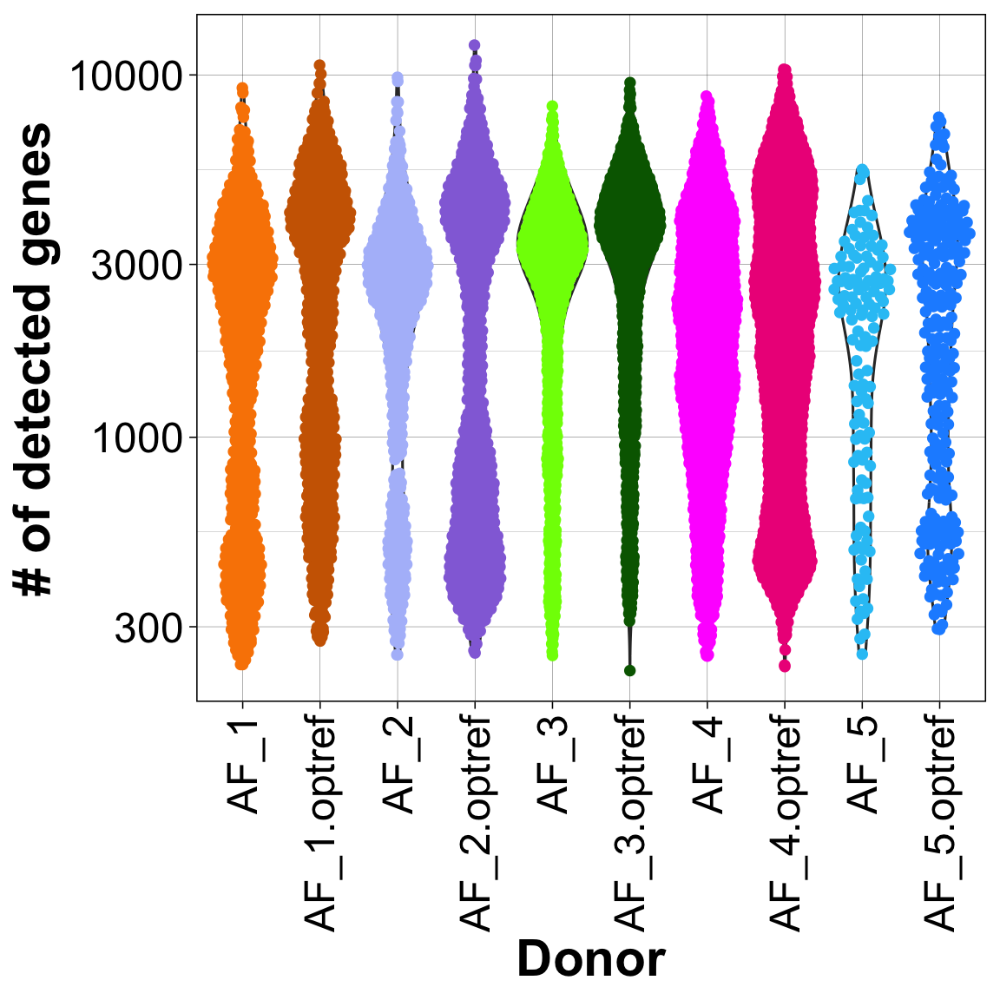
| Version | Author | Date |
|---|---|---|
| 34539a7 | Calandra Grima | 2026-09-30 |
supp_fig1.after_qc_count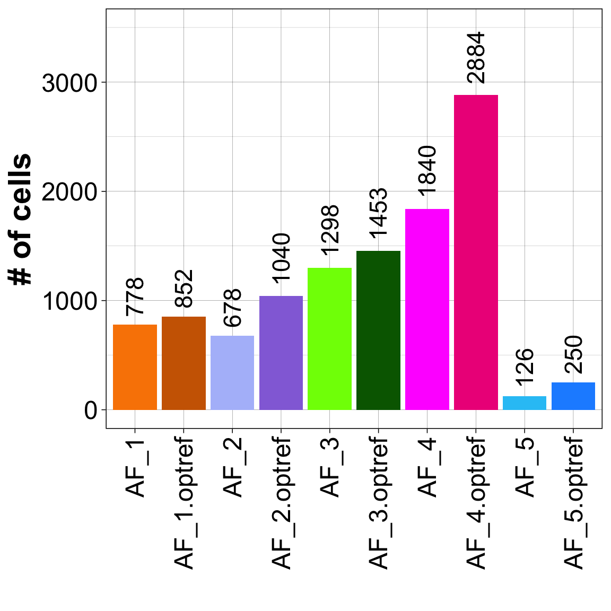
| Version | Author | Date |
|---|---|---|
| 34539a7 | Calandra Grima | 2026-09-30 |
saveRDS(supp_fig1.after_qc_sum, here("output", "supp_figures", "supp_fig1.after_qc_sum.RDS"))
saveRDS(supp_fig1.after_qc_detected, here("output", "supp_figures", "supp_fig1.after_qc_detected.RDS"))
saveRDS(supp_fig1.after_qc_count, here("output", "supp_figures", "supp_fig1.after_qc_count.RDS"))The seu.annotated object was generated on this page.
seu.annotated <- readRDS(here("data", "workflow", "AmnioSC_ALL_optimised_ref_comparison.Celltypist_annotated.Seurat.rds"))
# remove any cells with an NA value for the prob.vote metric of interest
summary(seu.annotated$pan_fetal.prob_vote) Min. 1st Qu. Median Mean 3rd Qu. Max. NA's
0.00000 0.09102 0.88829 0.61891 0.99883 1.00000 37 seu.annotated <- seu.annotated[,!is.na(seu.annotated$pan_fetal.prob_vote)]
summary(seu.annotated$pan_fetal.prob_vote) Min. 1st Qu. Median Mean 3rd Qu. Max.
1.000e-08 9.102e-02 8.883e-01 6.189e-01 9.988e-01 1.000e+00 seu.annotated$original_colname <- colnames(seu.annotated)
seu.annotated$cellname <- gsub("_optref", "", colnames(seu.annotated))
seu.annotated$is_optref <- !(seu.annotated$Dataset %in% c("dataset_01", "dataset_03", "dataset_04"))
filtered <- seu.annotated@meta.data %>% group_by(cellname) %>% filter(n() > 1)
seu.annotated <- seu.annotated[,filtered$original_colname]optref_meta <- seu.annotated@meta.data %>% subset(is_optref == TRUE)
colnames(optref_meta) <- paste0(colnames(optref_meta), "_optref")
rownames(optref_meta) <- optref_meta$cellname_optref
usual_meta <- seu.annotated@meta.data %>% subset(is_optref == FALSE)
rownames(usual_meta) <- usual_meta$cellname
comp_meta <- cbind(usual_meta, optref_meta)
alluvial_df <- createAlluvialLongDF(rownames(comp_meta),
comp_meta[,"pan_fetal.prob_vote"],
comp_meta[,"pan_fetal.prob_vote_optref"])
alluvial_df$donor_name <- comp_meta[alluvial_df$names,]$Donor
vals <- as.numeric(levels(alluvial_df$label_type))[alluvial_df$label_type]
breaks <- seq(0, 1, by = 0.1)
alluvial_df$label_group <- cut(vals, breaks=breaks, dig.lab=10)ggplot(alluvial_df, aes(x = label, alluvium = names, stratum = label_group, fill = label_group,
label = label_group)) +
geom_flow(stat = "alluvium", lode.guidance = "backward", alpha = 0.75,
segments = 100) +
geom_stratum(alpha = 1) +
theme_linedraw() +
theme(legend.position = "bottom") +
labs(title = "Comparing <i>CellTypist</i> annotation confidence between standard and optimised transcriptome references (by sample)") +
# geom_text(stat = "stratum", size = 6, direction = "x") +
scale_x_discrete(labels = c("Standard", "Optimised")) +
ylab("Number of cells") + xlab("Reference Used") +
facet_wrap(. ~ donor_name, scale = "free_y", nrow = 1) +
guides(fill=guide_legend(nrow = 1, "Annotation Probability")) +
scale_fill_viridis(discrete = T, option = "plasma") +
theme(plot.title = element_markdown(face = "bold", size = 24, family = "arial"),
axis.title = element_text(size = 22, family = "arial", face = "bold"),
axis.text = element_text(size = 18, family = "arial"),
legend.title = element_text(size = 20, family = "arial", face = "bold.italic"),
legend.text = element_text(size = 18, family = "arial"),
strip.text = element_text(size = 18, family = "arial", face = "bold")) -> supp_fig1.annotation_confidence
supp_fig1.annotation_confidence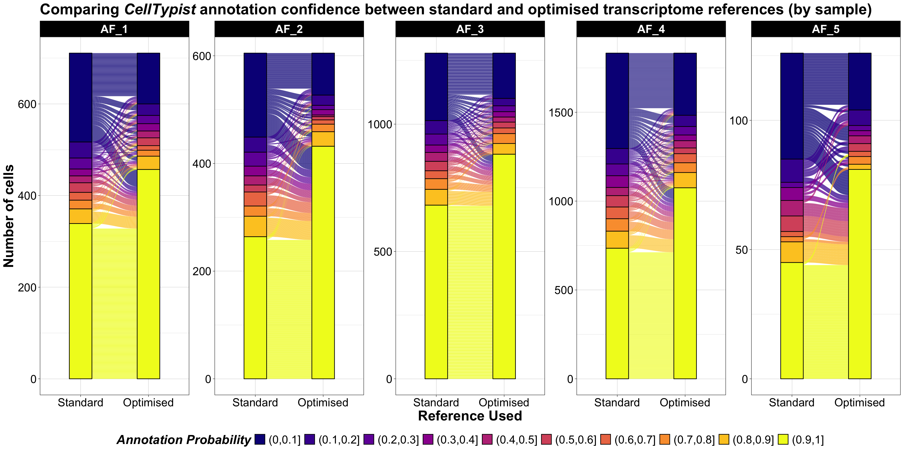
| Version | Author | Date |
|---|---|---|
| 34539a7 | Calandra Grima | 2026-09-30 |
saveRDS(supp_fig1.annotation_confidence, here("output", "supp_figures", "supp_fig1.annotation_confidence.RDS"))1.2 Arrange the plots
# supp_fig1.before_qc_sum <- readRDS(here("output", "supp_figures", "supp_fig1.before_qc_sum.RDS"))
# supp_fig1.before_qc_detected <- readRDS(here("output", "supp_figures", "supp_fig1.before_qc_detected.RDS"))
# supp_fig1.before_qc_count <- readRDS(here("output", "supp_figures", "supp_fig1.before_qc_count.RDS"))
# supp_fig1.after_qc_sum <- readRDS(here("output", "supp_figures", "supp_fig1.after_qc_sum.RDS"))
# supp_fig1.after_qc_detected <- readRDS(here("output", "supp_figures", "supp_fig1.after_qc_detected.RDS"))
# supp_fig1.after_qc_count <- readRDS(here("output", "supp_figures", "supp_fig1.after_qc_count.RDS"))
# supp_fig1.annotation_confidence <- readRDS(here("output", "supp_figures", "supp_fig1.annotation_confidence.RDS"))layout = "
AAAAAAAAAAAAAAA
AAAAAAAAAAAAAAA
AAAAAAAAAAAAAAA
BBBBBBBBBBBBBBB
BBBBBBBBBBBBBBB
BBBBBBBBBBBBBBB
CCCCCCCCCCCCCCC
CCCCCCCCCCCCCCC
CCCCCCCCCCCCCCC
CCCCCCCCCCCCCCC
"
wrap_elements(supp_fig1.before_qc_sum + supp_fig1.before_qc_detected + supp_fig1.before_qc_count +
theme(plot.margin = unit(rep(0,4), "cm"))) +
wrap_elements(supp_fig1.after_qc_sum + supp_fig1.after_qc_detected + supp_fig1.after_qc_count +
theme(plot.margin = unit(rep(0,4), "cm"))) +
wrap_elements(supp_fig1.annotation_confidence + theme(plot.margin = unit(rep(0,4), "cm"))) +
plot_layout(design = layout) +
plot_annotation(tag_levels = list(c("A", "B", "C", "D", "E", "F", "G"))) &
theme(
plot.tag = element_text(size = 24, face = "bold", family = "arial"),
plot.title = element_text(size = 10, face = "bold", family = "arial"),
axis.title = element_text(size = 20),
axis.text = element_text(size = 14),
legend.title = element_text(size = 16),
legend.text = element_text(size = 14)) -> supp_fig1
supp_fig1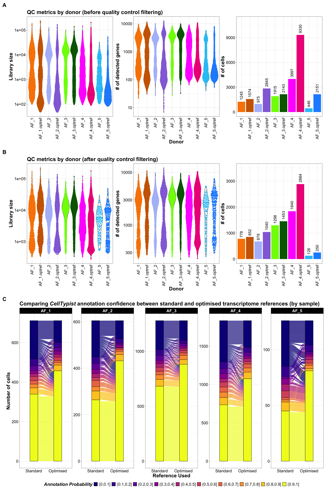
| Version | Author | Date |
|---|---|---|
| 34539a7 | Calandra Grima | 2026-09-30 |
ggsave(plot = supp_fig1, filename = here("output", "figures_png", "supp_fig1.png"),
width = 20, height = 30)rm(supp_fig1.before_qc_sum)
rm(supp_fig1.before_qc_detected)
rm(supp_fig1.before_qc_count)
rm(supp_fig1.after_qc_sum)
rm(supp_fig1.after_qc_detected)
rm(supp_fig1.after_qc_count)
rm(supp_fig1.annotation_confidence)
gc() used (Mb) gc trigger (Mb) limit (Mb) max used (Mb)
Ncells 10100503 539.5 17022800 909.2 NA 17022800 909.2
Vcells 291370010 2223.0 597449775 4558.2 49152 495899415 3783.52 Supplementary Figure 2
2.1 Generate the plots
The seu_int.AmnioSC object was generated on this page.
The seu_int.Gerli object was generated on this page.
seu_int.Gerli <- readRDS(here("data", "Gerli_et_al_2024",
"Gerli_et_al_2024.Refined_labels.Seurat.rds"))
seu_int.Gerli$Dataset_Source <- "Gerli et al. (2024) Dataset"seu_int.AmnioSC <- readRDS(here("data", "workflow",
"AmnioSC_ALL_optimised_ref.Refined_labels.Seurat.rds"))
seu_int.AmnioSC$Dataset_Source <- "Our Dataset"
seu_int.AmnioSC$Donor <- DONOR.PAPER[seu_int.AmnioSC$Donor]
seu_int.AmnioSC$Donor <- factor(seu_int.AmnioSC$Donor.Paper)plot_df <- rbind(seu_int.Gerli@meta.data[,c("nCount_RNA", "nFeature_RNA",
"Dataset_Source", "Donor")],
seu_int.AmnioSC@meta.data[,c("nCount_RNA", "nFeature_RNA",
"Dataset_Source", "Donor")])
plot_df$Dataset_Source <- factor(plot_df$Dataset_Source, levels = c("Our Dataset", "Gerli et al. (2024) Dataset"))plot_df %>%
ggplot(aes(x = Donor,
fill = Donor)) +
geom_bar() +
geom_text(stat='count', aes(label=..count..), vjust=0.5, hjust = -0.2, size = 6, angle = 90) +
theme_linedraw() +
scale_fill_manual(values = ALL_DONORS_COLOURS.PAPER) +
no_legend +
rotate_x_labels +
ylab("# of cells") +
xlab(" ") + ylim(0, 6500) +
facet_grid(. ~ Dataset_Source, scales = "free_x", space = "free_x") +
theme(plot.title = element_markdown(face = "bold", size = 24, family = "arial", hjust = 0.5),
axis.title = element_text(size = 22, family = "arial", face = "bold"),
axis.text = element_text(size = 18, family = "arial"),
legend.title = element_text(size = 20, family = "arial", face = "bold.italic"),
legend.text = element_text(size = 18, family = "arial"),
strip.text = element_text(size = 18, family = "arial", face = "bold")) -> supp_fig2.comparison_n_cells
supp_fig2.comparison_n_cellsWarning: The dot-dot notation (`..count..`) was deprecated in ggplot2 3.4.0.
ℹ Please use `after_stat(count)` instead.
This warning is displayed once per session.
Call `lifecycle::last_lifecycle_warnings()` to see where this warning was
generated.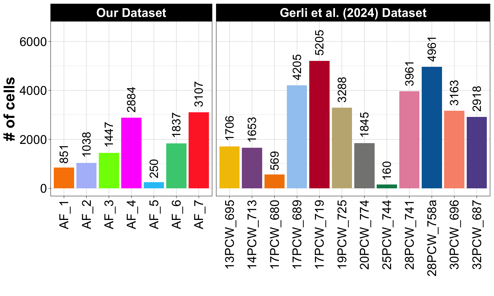
| Version | Author | Date |
|---|---|---|
| 34539a7 | Calandra Grima | 2026-09-30 |
plot_df %>%
ggplot(aes(x = Donor,
y = nCount_RNA)) +
geom_violin(scale = "area") +
geom_quasirandom(aes(color = Donor)) +
scale_y_log10() +
theme_linedraw() +
scale_colour_manual(values = ALL_DONORS_COLOURS.PAPER) +
no_legend +
rotate_x_labels +
xlab("Sample") +
ylab("Library size") +
facet_grid(. ~ Dataset_Source, scales = "free_x", space = "free_x") +
theme(plot.title = element_markdown(face = "bold", size = 24, family = "arial", hjust = 0.5),
axis.title = element_text(size = 22, family = "arial", face = "bold"),
axis.text = element_text(size = 18, family = "arial"),
legend.title = element_text(size = 20, family = "arial", face = "bold.italic"),
legend.text = element_text(size = 18, family = "arial"),
strip.text = element_text(size = 18, family = "arial", face = "bold")) -> supp_fig2.comparison_lib_size
supp_fig2.comparison_lib_size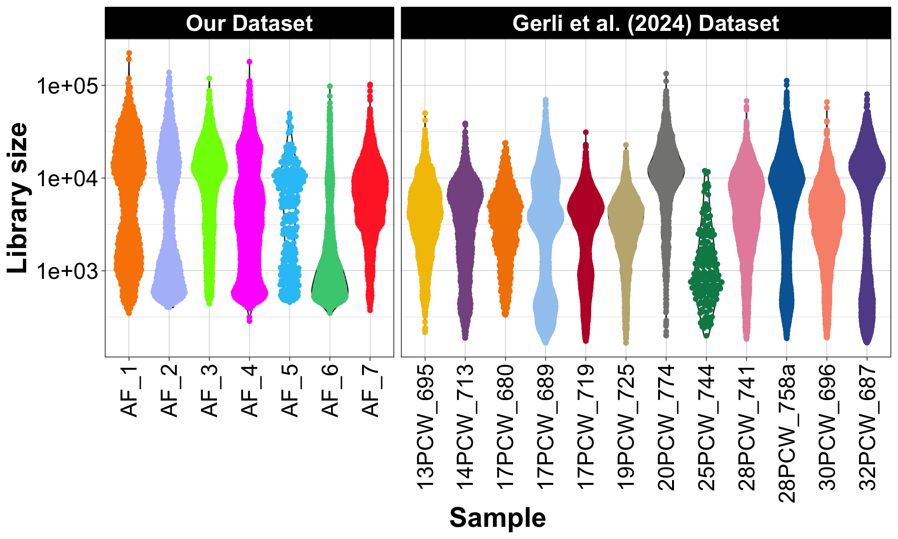
| Version | Author | Date |
|---|---|---|
| 34539a7 | Calandra Grima | 2026-09-30 |
plot_df %>%
ggplot(aes(x = Donor,
y = nFeature_RNA)) +
geom_violin(scale = "area") +
geom_quasirandom(aes(color = Donor)) +
scale_y_log10() +
theme_linedraw() +
scale_colour_manual(values = ALL_DONORS_COLOURS.PAPER) +
no_legend +
rotate_x_labels +
xlab(" ") +
ylab("# of detected genes") +
facet_grid(. ~ Dataset_Source, scales = "free_x", space = "free_x") +
theme(plot.title = element_markdown(face = "bold", size = 24, family = "arial", hjust = 0.5),
axis.title = element_text(size = 22, family = "arial", face = "bold"),
axis.text = element_text(size = 18, family = "arial"),
legend.title = element_text(size = 20, family = "arial", face = "bold.italic"),
legend.text = element_text(size = 18, family = "arial"),
strip.text = element_text(size = 18, family = "arial", face = "bold")) -> supp_fig2.comparison_detected
supp_fig2.comparison_detected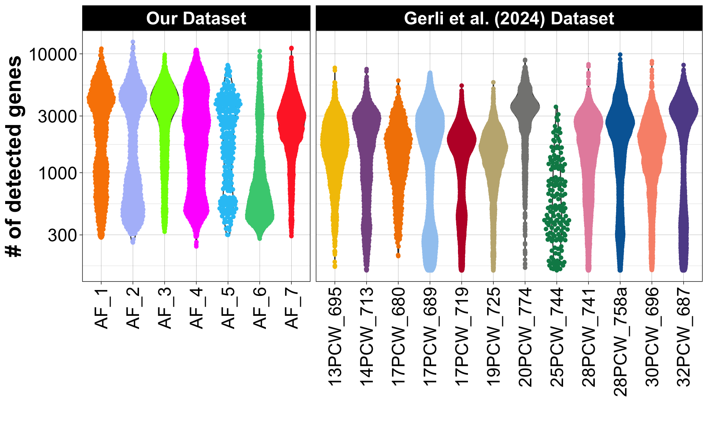
saveRDS(supp_fig2.comparison_n_cells, here("output", "supp_figures", "supp_fig2.comparison_n_cells.RDS"))
saveRDS(supp_fig2.comparison_lib_size, here("output", "supp_figures", "supp_fig2.comparison_lib_size.RDS"))
saveRDS(supp_fig2.comparison_detected, here("output", "supp_figures", "supp_fig2.comparison_detected.RDS"))seu_int.AmnioSC@meta.data %>%
ggplot(aes(x = cluster_names,
y = nCount_RNA)) +
geom_violin(scale = "area") +
geom_quasirandom(aes(color = cluster_names)) +
scale_y_log10() +
theme_linedraw() +
scale_colour_manual(values = CLUSTER_NAME_COLOURS) +
no_legend + rotate_x_labels +
labs(title = "QC metrics by cluster",
subtitle = "Our Dataset") +
xlab(" ") +
ylab("Library size") +
theme(plot.title = element_markdown(face = "bold", size = 24, family = "arial"),
plot.subtitle = element_markdown(face = "italic", size = 22, family = "arial"),
axis.title = element_text(size = 22, family = "arial", face = "bold"),
axis.text = element_text(size = 18, family = "arial")) -> supp_fig2.AmnioSC_cluster_lib_size
seu_int.AmnioSC@meta.data %>%
ggplot(aes(x = cluster_names,
y = nFeature_RNA)) +
geom_violin(scale = "area") +
geom_quasirandom(aes(color = cluster_names)) +
scale_y_log10() +
theme_linedraw() + rotate_x_labels +
scale_colour_manual(values = CLUSTER_NAME_COLOURS) +
no_legend +
xlab(" ") +
ylab("# of detected genes") +
theme(plot.title = element_markdown(face = "bold", size = 24, family = "arial"),
plot.subtitle = element_markdown(face = "italic", size = 22, family = "arial"),
axis.title = element_text(size = 22, family = "arial", face = "bold"),
axis.text = element_text(size = 18, family = "arial")) -> supp_fig2.AmnioSC_cluster_detected
supp_fig2.AmnioSC_cluster_lib_size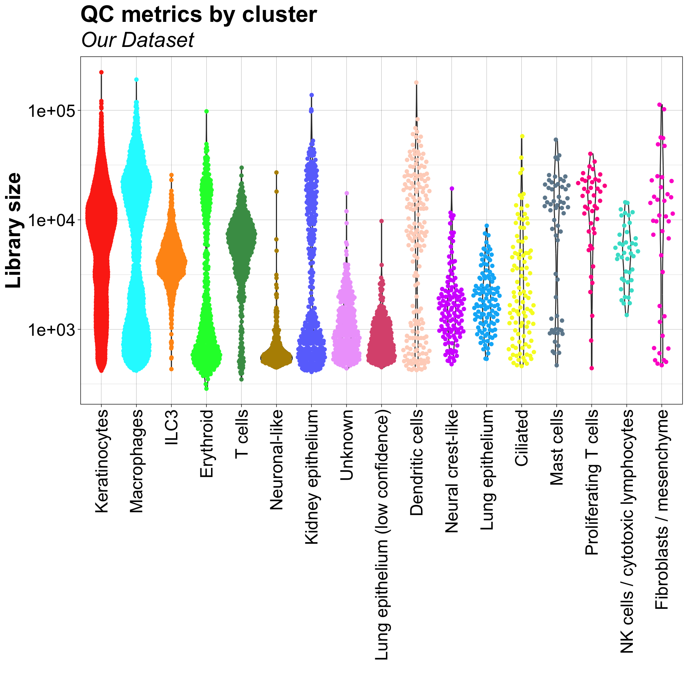
supp_fig2.AmnioSC_cluster_detected
saveRDS(supp_fig2.AmnioSC_cluster_lib_size,
here("output", "supp_figures", "supp_fig2.AmnioSC_cluster_lib_size.RDS"))
saveRDS(supp_fig2.AmnioSC_cluster_detected,
here("output", "supp_figures", "supp_fig2.AmnioSC_cluster_detected.RDS"))
seu_int.Gerli@meta.data %>%
ggplot(aes(x = cluster_names,
y = nCount_RNA)) +
geom_violin(scale = "area") +
geom_quasirandom(aes(color = cluster_names)) +
scale_y_log10() +
theme_linedraw() +
scale_colour_manual(values = CLUSTER_NAME_COLOURS.GERLI) +
no_legend + rotate_x_labels +
labs(title = "QC metrics by cluster",
subtitle = "Gerli et al. (2024) Dataset") +
xlab(" ") +
ylab("Library size") +
theme(plot.title = element_markdown(face = "bold", size = 24, family = "arial"),
plot.subtitle = element_markdown(face = "italic", size = 22, family = "arial"),
axis.title = element_text(size = 22, family = "arial", face = "bold"),
axis.text = element_text(size = 18, family = "arial")) -> supp_fig2.Gerli_cluster_lib_size
seu_int.Gerli@meta.data %>%
ggplot(aes(x = cluster_names,
y = nFeature_RNA)) +
geom_violin(scale = "area") +
geom_quasirandom(aes(color = cluster_names)) +
scale_y_log10() +
theme_linedraw() + rotate_x_labels +
scale_colour_manual(values = CLUSTER_NAME_COLOURS.GERLI) +
no_legend +
xlab(" ") +
ylab("# of detected genes") +
theme(plot.title = element_markdown(face = "bold", size = 24, family = "arial"),
plot.subtitle = element_markdown(face = "italic", size = 22, family = "arial"),
axis.title = element_text(size = 22, family = "arial", face = "bold"),
axis.text = element_text(size = 18, family = "arial")) -> supp_fig2.Gerli_cluster_detected
supp_fig2.Gerli_cluster_lib_size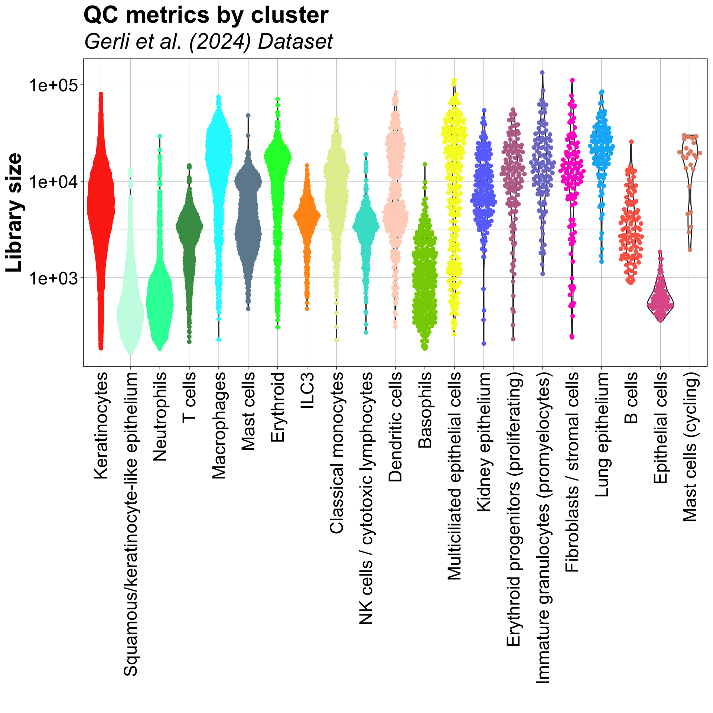
supp_fig2.Gerli_cluster_detected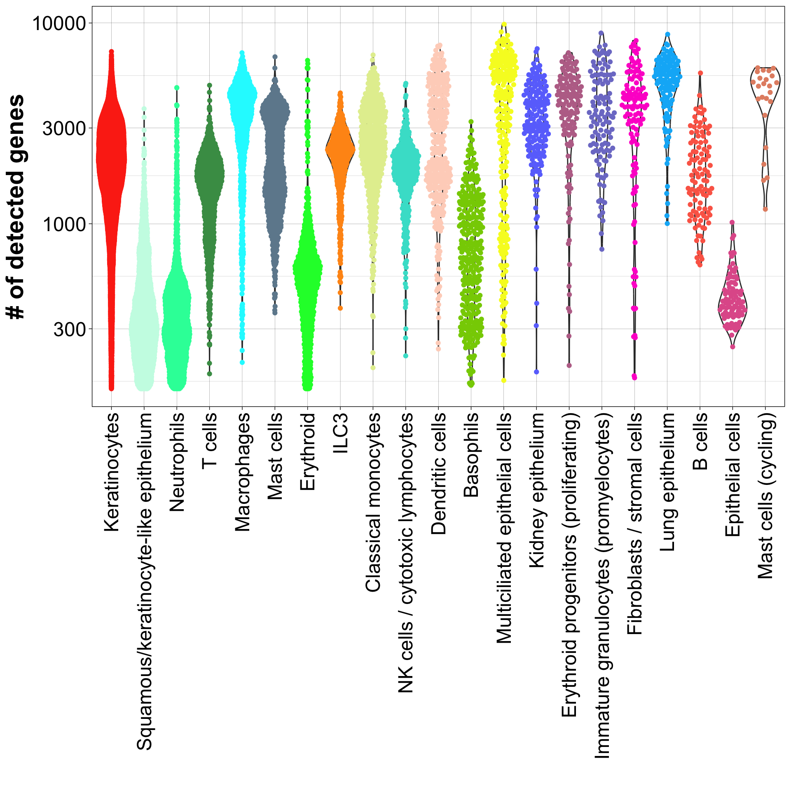
saveRDS(supp_fig2.Gerli_cluster_lib_size,
here("output", "supp_figures", "supp_fig2.Gerli_cluster_lib_size.RDS"))
saveRDS(supp_fig2.Gerli_cluster_detected,
here("output", "supp_figures", "supp_fig2.Gerli_cluster_detected.RDS"))The seu_int.Merged object was generated on this page
seu_int.Merged <- readRDS(here("data", "merged", "AmnioSC.Gerli_et_al_2024.Integrated.Seurat.rds"))DATASET_SOURCE_COLOURS <- dark.colors(n = 2)Warning in makePalette(n, dark): minimal value for n is 3, returning requested palette with 3 levelsnames(DATASET_SOURCE_COLOURS) <- c("Our Dataset", "Gerli et al. (2024)")
supp_fig2.Merged_umap_dataset <- plotUMAP.Paper(seu_int.Merged, color_by = "Dataset_Source",
colour_scheme = DATASET_SOURCE_COLOURS,
title = "Dataset",
subtitle = "Integrated Datasets",
label_clusters = FALSE)Warning: `aes_string()` was deprecated in ggplot2 3.0.0.
ℹ Please use tidy evaluation idioms with `aes()`.
ℹ See also `vignette("ggplot2-in-packages")` for more information.
ℹ The deprecated feature was likely used in the Seurat package.
Please report the issue at <https://github.com/satijalab/seurat/issues>.
This warning is displayed once per session.
Call `lifecycle::last_lifecycle_warnings()` to see where this warning was
generated.supp_fig2.Merged_umap_dataset <- supp_fig2.Merged_umap_dataset + bottom_legend +
guides(colour=guide_legend(title="Dataset")) +
theme(legend.title = element_text(size = 20,
family = "arial", face = "bold.italic"),
legend.text = element_text(size = 18, family = "arial"))
supp_fig2.Merged_umap_dataset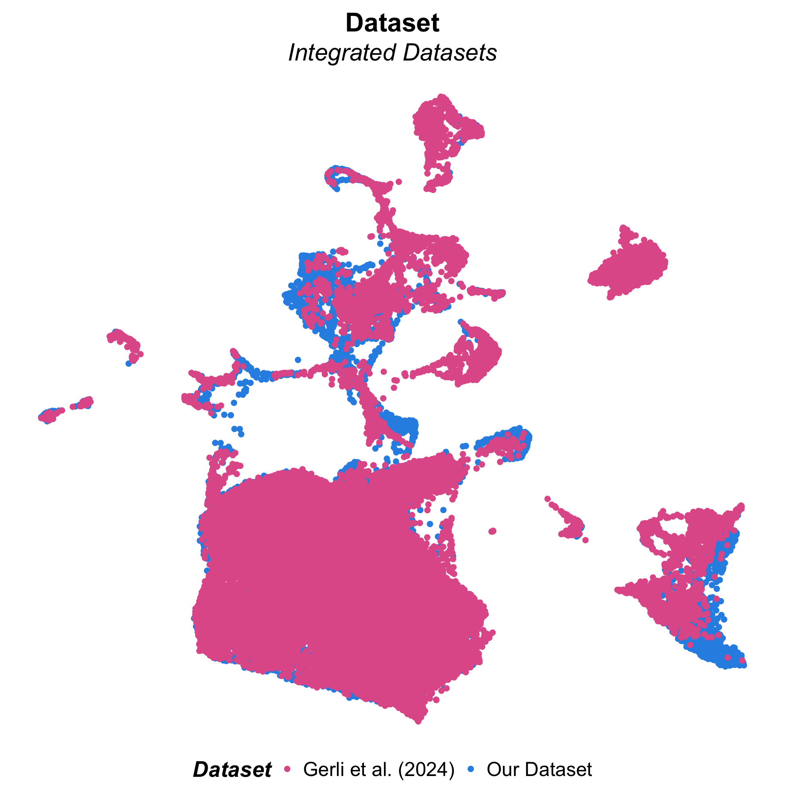
saveRDS(supp_fig2.Merged_umap_dataset, here("output", "supp_figures", "supp_fig2.Merged_umap_dataset.RDS"))
supp_fig2.Merged_umap_pan_fetal <- plotUMAP.Paper(seu_int.Merged, color_by = "pan_fetal.majority_voting",
colour_scheme = ALL_CELL_TYPE_COLOURS,
title = "*Pan_Fetal_Human* Annotation",
subtitle = "Integrated Datasets",
label_size = 6)Warning in geom.use(data = labels.loc, mapping = aes_string(x = xynames["x"], :
Ignoring unknown parameters: `fill`supp_fig2.Merged_umap_pan_fetal
saveRDS(supp_fig2.Merged_umap_pan_fetal, here("output", "supp_figures", "supp_fig2.Merged_umap_pan_fetal.RDS"))
supp_fig2.Merged_umap_fetal_organ <- plotUMAP.Paper(seu_int.Merged, color_by = "fetal_organ.majority_voting",
colour_scheme = ALL_CELL_TYPE_COLOURS,
title = "*Developing_Human_Organs* Annotation",
subtitle = "Integrated Datasets",
label_size = 6)Warning in geom.use(data = labels.loc, mapping = aes_string(x = xynames["x"], :
Ignoring unknown parameters: `fill`supp_fig2.Merged_umap_fetal_organ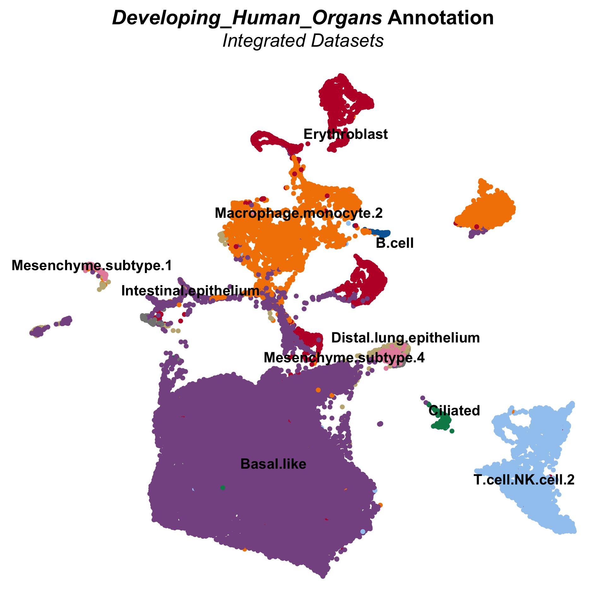
saveRDS(supp_fig2.Merged_umap_fetal_organ, here("output", "supp_figures", "supp_fig2.Merged_umap_fetal_organ.RDS"))2.2 Arrange the plots
# supp_fig2.comparison_n_cells <- readRDS(here("output", "supp_figures",
# "supp_fig2.comparison_n_cells.RDS"))
# supp_fig2.comparison_lib_size <- readRDS(here("output", "supp_figures",
# "supp_fig2.comparison_lib_size.RDS"))
# supp_fig2.comparison_detected <- readRDS(here("output", "supp_figures",
# "supp_fig2.comparison_detected.RDS"))
#
# supp_fig2.AmnioSC_cluster_lib_size <- readRDS(here("output", "supp_figures",
# "supp_fig2.AmnioSC_cluster_lib_size.RDS"))
# supp_fig2.AmnioSC_cluster_detected <- readRDS(here("output", "supp_figures",
# "supp_fig2.AmnioSC_cluster_detected.RDS"))
#
# supp_fig2.Gerli_cluster_lib_size <- readRDS(here("output", "supp_figures",
# "supp_fig2.Gerli_cluster_lib_size.RDS"))
# supp_fig2.Gerli_cluster_detected <- readRDS(here("output", "supp_figures",
# "supp_fig2.Gerli_cluster_detected.RDS"))
# supp_fig2.Merged_umap_dataset <- readRDS(here("output", "supp_figures", "supp_fig2.Merged_umap_dataset.RDS"))
# supp_fig2.Merged_umap_pan_fetal <- readRDS(here("output", "supp_figures", "supp_fig2.Merged_umap_pan_fetal.RDS"))
# supp_fig2.Merged_umap_fetal_organ <- readRDS(here("output", "supp_figures", "supp_fig2.Merged_umap_fetal_organ.RDS"))layout = "
AAAAAABBBBBBCCCCCC
AAAAAABBBBBBCCCCCC
AAAAAABBBBBBCCCCCC
DDDDEEEEFFFFFGGGGG
DDDDEEEEFFFFFGGGGG
HHHHHIIIIIIJJJJJJJ
HHHHHIIIIIIJJJJJJJ
HHHHHIIIIIIJJJJJJJ
HHHHHIIIIIIJJJJJJJ
"
wrap_elements(supp_fig2.comparison_n_cells + theme(plot.margin = unit(rep(0,4), "cm"))) +
wrap_elements(supp_fig2.comparison_lib_size + theme(plot.margin = unit(rep(0,4), "cm"))) +
wrap_elements(supp_fig2.comparison_detected + theme(plot.margin = unit(rep(0,4), "cm"))) +
supp_fig2.AmnioSC_cluster_lib_size + supp_fig2.AmnioSC_cluster_detected +
supp_fig2.Gerli_cluster_lib_size + supp_fig2.Gerli_cluster_detected +
wrap_elements(supp_fig2.Merged_umap_dataset) +
wrap_elements(supp_fig2.Merged_umap_pan_fetal) +
wrap_elements(supp_fig2.Merged_umap_fetal_organ) +
plot_layout(design = layout) +
plot_annotation(tag_levels = list(c("A", " ", " ", "B", " ", " ", " ", "C", "D", "E", "F", "G", "H", "I", "J"))) &
theme(plot.tag = element_text(size = 28, face = "bold", family = "arial")) -> supp_fig2
supp_fig2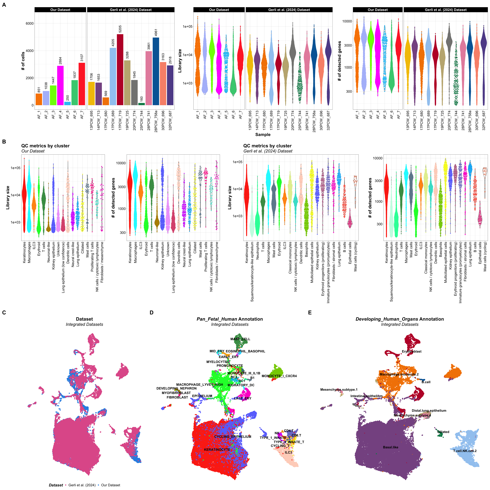
ggsave(plot = supp_fig2, filename = here("output", "figures_png", "supp_fig2.png"),
height = 35, width = 35)rm(supp_fig2.comparison_n_cells)
rm(supp_fig2.comparison_lib_size)
rm(supp_fig2.comparison_detected)
rm(supp_fig2.AmnioSC_cluster_lib_size)
rm(supp_fig2.AmnioSC_cluster_detected)
rm(supp_fig2.Gerli_cluster_lib_size)
rm(supp_fig2.Gerli_cluster_detected)
rm(supp_fig2.Merged_umap_dataset)
rm(supp_fig2.Merged_umap_pan_fetal)
rm(supp_fig2.Merged_umap_fetal_organ)
gc() used (Mb) gc trigger (Mb) limit (Mb) max used (Mb)
Ncells 10395712 555.2 17022800 909.2 NA 17022800 909.2
Vcells 1905919791 14541.1 2820188157 21516.4 49152 1980026764 15106.53 Supplementary Figure 3
3.1 Generate the plots
The seu_int.AmnioSC object was generated on this
page.
seu_int.AmnioSC <- readRDS(here("data", "workflow", "AmnioSC_ALL_optimised_ref.Refined_labels.Seurat.rds"))supp_fig3.n_cells_pan_fetal <- plotNCells.Paper(seu_int.AmnioSC, x_var = "pan_fetal.majority_voting",
color_by = "pan_fetal.majority_voting",
colour_scheme = ALL_CELL_TYPE_COLOURS,
title = "Number of cells per<br>*Pan_Fetal_Human* annotation<br>",
subtitle="Our Dataset",
xlab = "", ylab = "Number of cells", ymax = 6500)
supp_fig3.n_cells_pan_fetal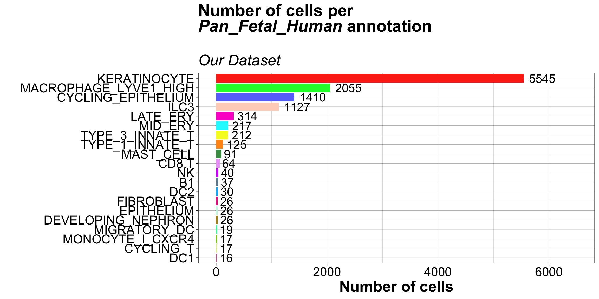
| Version | Author | Date |
|---|---|---|
| 34539a7 | Calandra Grima | 2026-09-30 |
saveRDS(supp_fig3.n_cells_pan_fetal, here("output", "supp_figures", "supp_fig3.n_cells_pan_fetal.rds"))
supp_fig3.n_cells_fetal_organ <- plotNCells.Paper(seu_int.AmnioSC, x_var = "fetal_organ.majority_voting",
color_by = "fetal_organ.majority_voting",
colour_scheme = ALL_CELL_TYPE_COLOURS,
title = "Number of cells per<br>*Developing_Human_Organs*<br>annotation",
subtitle="Our Dataset",
xlab = "", ylab = "Number of cells", ymax = 7500)
supp_fig3.n_cells_fetal_organ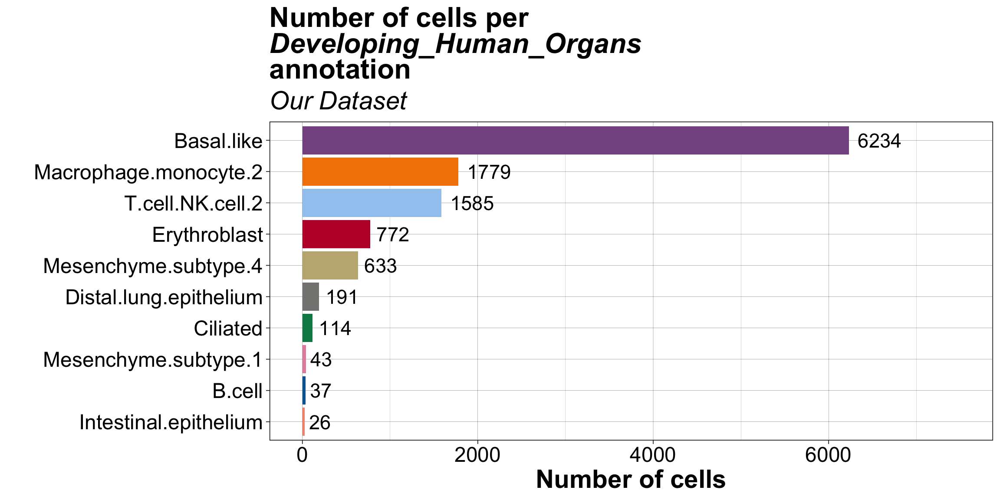
| Version | Author | Date |
|---|---|---|
| 34539a7 | Calandra Grima | 2026-09-30 |
saveRDS(supp_fig3.n_cells_fetal_organ, here("output", "supp_figures", "supp_fig3.n_cells_fetal_organ.rds"))supp_fig3.umap_pan_fetal <- plotUMAP.Paper(seu_int.AmnioSC, color_by = "pan_fetal.majority_voting",
colour_scheme = ALL_CELL_TYPE_COLOURS,
title = "*Pan_Fetal_Human* Annotation",
subtitle = "Our Dataset",
label_size = 6)Warning in geom.use(data = labels.loc, mapping = aes_string(x = xynames["x"], :
Ignoring unknown parameters: `fill`supp_fig3.umap_pan_fetal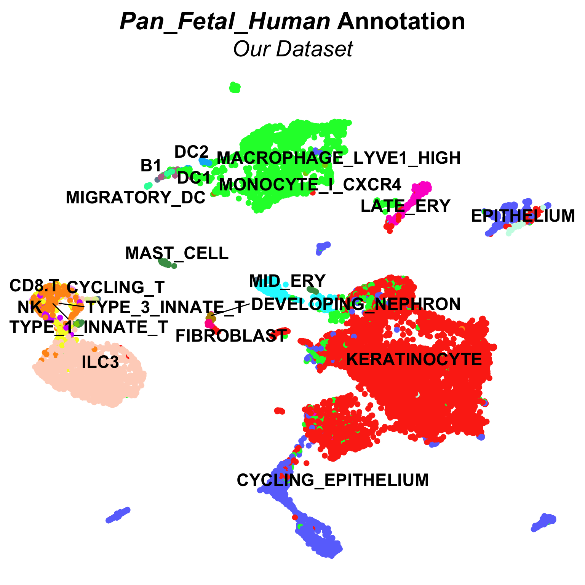
saveRDS(supp_fig3.umap_pan_fetal, here("output", "supp_figures", "supp_fig3.umap_pan_fetal.rds"))
supp_fig3.umap_fetal_organ <- plotUMAP.Paper(seu_int.AmnioSC, color_by = "fetal_organ.majority_voting",
colour_scheme = ALL_CELL_TYPE_COLOURS,
title = "*Developing_Human_Organs* Annotation",
subtitle = "Our Dataset",
label_size = 6)Warning in geom.use(data = labels.loc, mapping = aes_string(x = xynames["x"], :
Ignoring unknown parameters: `fill`supp_fig3.umap_fetal_organ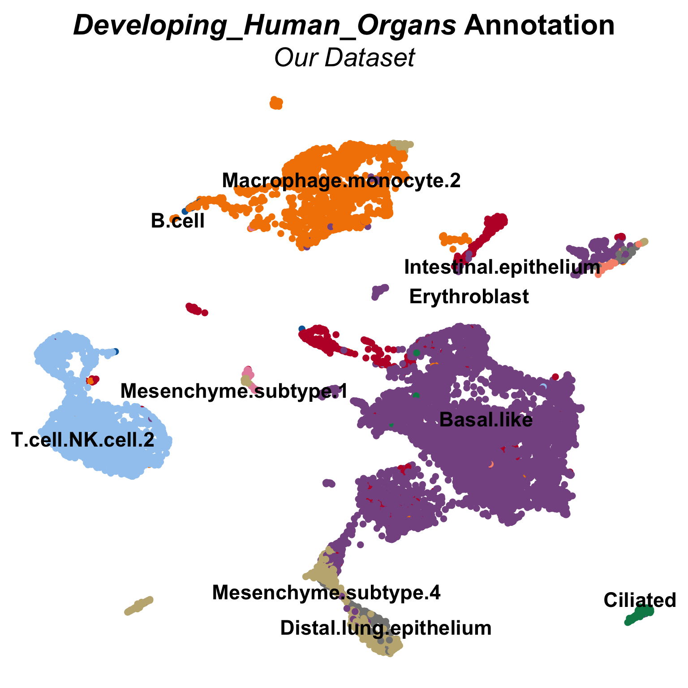
saveRDS(supp_fig3.umap_fetal_organ, here("output", "supp_figures", "supp_fig3.umap_fetal_organ.rds"))supp_fig3.cluster_composition_pan_fetal <- seu_int.AmnioSC@meta.data %>%
ggplot(aes(x = cluster_names,
fill = pan_fetal.majority_voting)) +
geom_bar(position="fill") +
theme_linedraw(12) +
ylab("Proportion") + xlab("") +
scale_fill_manual(values = ALL_CELL_TYPE_COLOURS[levels(seu_int.AmnioSC$pan_fetal.majority_voting)]) +
guides(fill=guide_legend(ncol = 1)) + labs(fill="Pan_Fetal_Human\nAnnotation") + rotate_x_labels +
ggtitle("Cell type composition of each cluster<br>*using Pan_Fetal_Human* annotations") +
labs(subtitle = "Our Dataset") +
theme(plot.title = element_markdown(face = "bold", size = 24),
plot.subtitle = element_markdown(face = "italic", size = 22, family = "arial"),
legend.title = element_text(size = 20, face = "bold.italic", family = "arial"),
legend.text = element_text(size = 18, family = "arial"),
axis.title = element_text(size = 22, family = "arial", face = "bold"),
axis.text = element_text(size = 18, family = "arial"))
supp_fig3.cluster_composition_pan_fetal
| Version | Author | Date |
|---|---|---|
| 34539a7 | Calandra Grima | 2026-09-30 |
saveRDS(supp_fig3.cluster_composition_pan_fetal, here("output", "supp_figures", "supp_fig3.cluster_composition_pan_fetal.rds"))
supp_fig3.cluster_composition_fetal_organ <- seu_int.AmnioSC@meta.data %>%
ggplot(aes(x = cluster_names,
fill = fetal_organ.majority_voting)) +
geom_bar(position="fill") +
theme_linedraw(12) +
ylab("Proportion") + xlab("") +
scale_fill_manual(values = ALL_CELL_TYPE_COLOURS[levels(seu_int.AmnioSC$fetal_organ.majority_voting)]) +
guides(fill=guide_legend(ncol = 1)) + rotate_x_labels + labs(fill = "Developing_Human_Organs\nAnnotation") +
ggtitle("Cell type composition of each cluster<br>using *Developing_Human_Organs* annotations") +
labs(subtitle = "Our Dataset") +
theme(plot.title = element_markdown(face = "bold", size = 24),
plot.subtitle = element_markdown(face = "italic", size = 22, family = "arial"),
legend.title = element_text(size = 20, face = "bold.italic", family = "arial"),
legend.text = element_text(size = 18, family = "arial"),
axis.title = element_text(size = 22, family = "arial", face = "bold"),
axis.text = element_text(size = 18, family = "arial"))
supp_fig3.cluster_composition_fetal_organ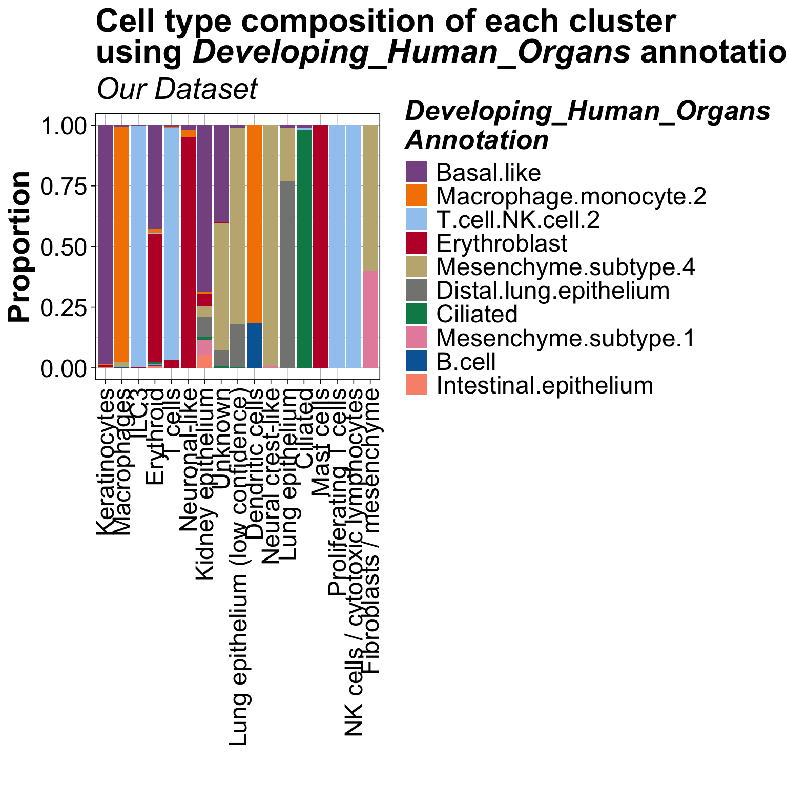
| Version | Author | Date |
|---|---|---|
| 34539a7 | Calandra Grima | 2026-09-30 |
saveRDS(supp_fig3.cluster_composition_fetal_organ, here("output", "supp_figures", "supp_fig3.cluster_composition_fetal_organ.rds"))3.2 Arrange the plots
# supp_fig3.umap_pan_fetal <- readRDS(here("output", "supp_figures",
# "supp_fig3.umap_pan_fetal.rds"))
# supp_fig3.n_cells_pan_fetal <- readRDS(here("output", "supp_figures",
# "supp_fig3.n_cells_pan_fetal.rds"))
# supp_fig3.umap_fetal_organ <- readRDS(here("output", "supp_figures",
# "supp_fig3.umap_fetal_organ.rds"))
# supp_fig3.n_cells_fetal_organ <- readRDS(here("output", "supp_figures",
# "supp_fig3.n_cells_fetal_organ.rds"))
# supp_fig3.cluster_composition_pan_fetal <- readRDS(here("output", "supp_figures",
# "supp_fig3.cluster_composition_pan_fetal.rds"))
# supp_fig3.cluster_composition_fetal_organ <- readRDS(here("output", "supp_figures",
# "supp_fig3.cluster_composition_fetal_organ.rds"))layout = "
AAAAAAAABBBBBBGGGGGGGG
AAAAAAAABBBBBBGGGGGGGG
AAAAAAAABBBBBBGGGGGGGG
AAAAAAAABBBBBBGGGGGGGG
AAAAAAAABBBBBBGGGGGGGG
AAAAAAAABBBBBBGGGGGGGG
EEEEEEEEFFFFFFHHHHHHHH
EEEEEEEEFFFFFFHHHHHHHH
EEEEEEEEFFFFFFHHHHHHHH
EEEEEEEEFFFFFFHHHHHHHH
EEEEEEEEFFFFFFHHHHHHHH
EEEEEEEEFFFFFFHHHHHHHH
"
wrap_elements(supp_fig3.umap_pan_fetal + theme(plot.margin = unit(rep(0,4), "cm"))) +
wrap_elements(supp_fig3.n_cells_pan_fetal + theme(plot.margin = unit(rep(0,4), "cm"))) +
wrap_elements(supp_fig3.umap_fetal_organ + theme(plot.margin = unit(rep(0,4), "cm"))) +
wrap_elements(supp_fig3.n_cells_fetal_organ + theme(plot.margin = unit(rep(0,4), "cm"))) +
wrap_elements(supp_fig3.cluster_composition_pan_fetal + theme(plot.margin = unit(rep(0,4), "cm"))) +
wrap_elements(supp_fig3.cluster_composition_fetal_organ + theme(plot.margin = unit(rep(0,4), "cm"))) +
plot_layout(design = layout) +
plot_annotation(tag_levels = list(c("A", "B", "C", "D", "E", "F", "G", "H"))) &
theme(plot.tag = element_text(size = 28, face = "bold", family = "arial")) -> supp_fig3
supp_fig3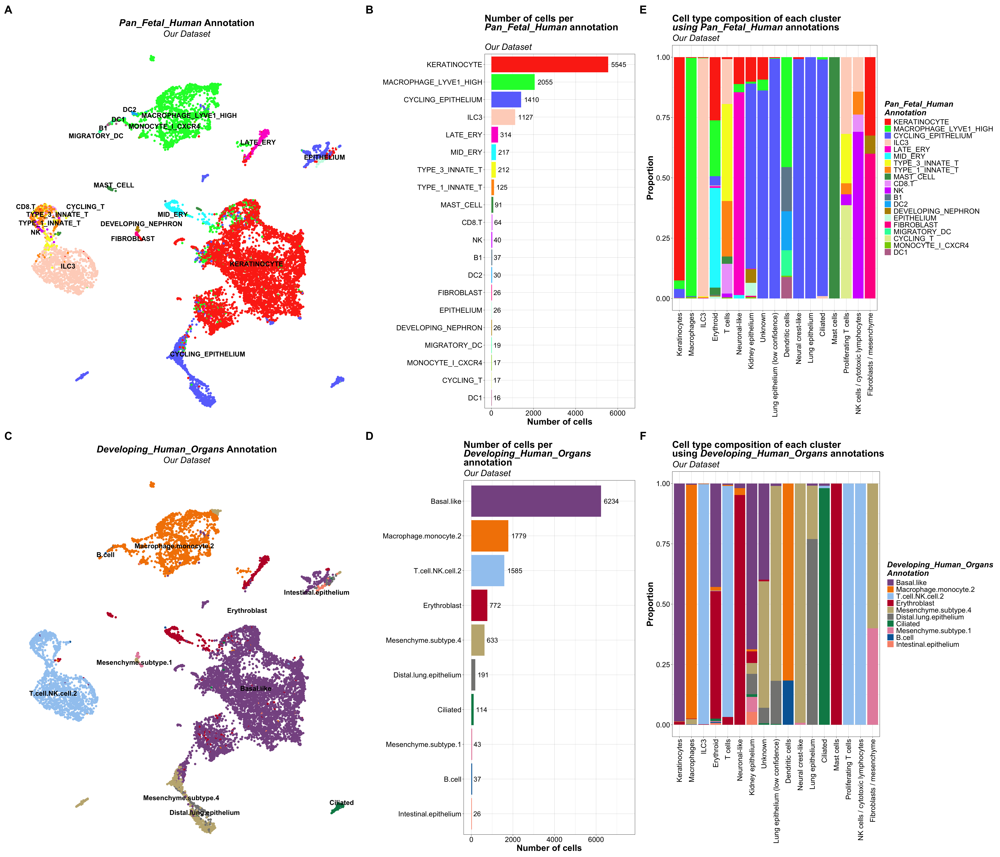
| Version | Author | Date |
|---|---|---|
| 34539a7 | Calandra Grima | 2026-09-30 |
ggsave(plot = supp_fig3, filename = here("output", "figures_png", "supp_fig3.png"),
height = 30, width = 35)rm(supp_fig3.umap_pan_fetal)
rm(supp_fig3.n_cells_pan_fetal)
rm(supp_fig3.umap_fetal_organ)
rm(supp_fig3.n_cells_fetal_organ)
rm(supp_fig3.cluster_composition_pan_fetal)
rm(supp_fig3.cluster_composition_fetal_organ)
gc() used (Mb) gc trigger (Mb) limit (Mb) max used (Mb)
Ncells 10525900 562.2 17022800 909.2 NA 17022800 909.2
Vcells 1906851882 14548.2 2820188157 21516.4 49152 2223019649 16960.34 Session info
sessioninfo::session_info()─ Session info ───────────────────────────────────────────────────────────────
setting value
version R version 4.5.0 (2025-04-11)
os macOS 26.7.1
system aarch64, darwin20
ui X11
language (EN)
collate en_US.UTF-8
ctype en_US.UTF-8
tz Australia/Melbourne
date 2026-10-27
pandoc 3.10 @ /Applications/RStudio.app/Contents/Resources/app/quarto/bin/tools/aarch64/ (via rmarkdown)
quarto 1.10.18 @ /Applications/RStudio.app/Contents/Resources/app/quarto/bin/quarto
─ Packages ───────────────────────────────────────────────────────────────────
! package * version date (UTC) lib source
P abind 1.4-8 2024-09-12 [?] RSPM
P beachmat 2.26.0 2025-10-29 [?] Bioconduc~
P beeswarm 0.4.0 2021-06-01 [?] RSPM
P Biobase * 2.70.0 2025-10-29 [?] Bioconduc~
P BiocGenerics * 0.56.0 2025-10-29 [?] Bioconduc~
P BiocManager 1.30.27 2025-11-14 [?] RSPM
P BiocNeighbors 2.4.0 2025-10-29 [?] Bioconduc~
P BiocParallel 1.44.0 2025-10-29 [?] Bioconduc~
P BiocSingular 1.26.1 2025-11-17 [?] Bioconduc~
P bluster 1.20.0 2025-10-29 [?] Bioconduc~
P bslib 0.10.0 2026-01-26 [?] RSPM
P cachem 1.1.0 2024-05-16 [?] RSPM
P callr 3.7.6 2024-03-25 [?] CRAN (R 4.5.0)
P cli 3.6.6 2026-04-09 [?] RSPM
P cluster 2.1.8.1 2025-03-12 [?] CRAN (R 4.5.0)
P clustree * 0.5.1 2023-11-05 [?] RSPM
P codetools 0.2-20 2024-03-31 [?] CRAN (R 4.5.0)
colorspace 2.1-2 2025-09-22 [1] RSPM (R 4.5.0)
P commonmark 2.0.0 2025-07-07 [?] RSPM
P cowplot * 1.2.0 2025-07-07 [?] RSPM
P data.table 1.18.2.1 2026-01-27 [?] RSPM
DelayedArray 0.36.1 2026-03-31 [1] https://bioc-release.r-universe.dev (R 4.5.3)
P deldir 2.0-4 2024-02-28 [?] RSPM
P digest 0.6.39 2025-11-19 [?] RSPM
dplyr * 1.2.0 2026-02-03 [1] RSPM (R 4.5.0)
P dqrng 0.4.1 2024-05-28 [?] CRAN (R 4.5.0)
P edgeR * 4.8.2 2025-12-23 [?] https://bioc-release.r-universe.dev (R 4.5.2)
P egg * 0.4.5 2019-07-13 [?] RSPM
P evaluate 1.0.5 2025-08-27 [?] RSPM
P farver 2.1.2 2024-05-13 [?] RSPM
P fastmap 1.2.0 2024-05-15 [?] RSPM
P fitdistrplus 1.2-6 2026-01-24 [?] RSPM
P forcats * 1.0.1 2025-09-25 [?] RSPM
P fs 2.1.0 2026-04-18 [?] RSPM
P future 1.69.0 2026-01-16 [?] RSPM
P future.apply 1.20.1 2025-12-09 [?] RSPM
P generics * 0.1.4 2025-05-09 [?] CRAN (R 4.5.0)
P GenomicRanges * 1.62.1 2025-12-08 [?] Bioconduc~
P getPass 0.2-4 2023-12-10 [?] CRAN (R 4.5.0)
P ggalluvial * 0.12.5 2023-02-22 [?] RSPM
P ggbeeswarm * 0.7.3 2025-11-29 [?] RSPM
P ggforce 0.5.0 2025-06-18 [?] RSPM
P ggplot2 * 4.0.2 2026-02-03 [?] RSPM
P ggplotify * 0.1.3 2025-09-20 [?] RSPM
P ggraph * 2.2.2 2025-08-24 [?] RSPM
P ggrepel * 0.9.6 2024-09-07 [?] CRAN (R 4.5.0)
P ggridges 0.5.7 2025-08-27 [?] RSPM
P ggtext * 0.1.2 2022-09-16 [?] RSPM
P git2r 0.36.2 2025-03-29 [?] CRAN (R 4.5.0)
P globals 0.19.0 2026-02-02 [?] RSPM
P glue 1.8.0 2024-09-30 [?] RSPM
P goftest 1.2-3 2021-10-07 [?] CRAN (R 4.5.0)
P graphlayouts 1.2.2 2025-01-23 [?] RSPM
P gridExtra * 2.3 2017-09-09 [?] RSPM
gridGraphics 0.5-1 2020-12-13 [1] RSPM (R 4.5.0)
P gridtext 0.1.5 2022-09-16 [?] RSPM
P gtable 0.3.6 2024-10-25 [?] RSPM
P here * 1.0.2 2025-09-15 [?] RSPM
P hms 1.1.4 2025-10-17 [?] RSPM
P htmltools 0.5.9 2025-12-04 [?] RSPM
P htmlwidgets 1.6.4 2023-12-06 [?] RSPM
P httpuv 1.6.16 2025-04-16 [?] CRAN (R 4.5.0)
P httr 1.4.7 2023-08-15 [?] RSPM
P ica 1.0-3 2022-07-08 [?] CRAN (R 4.5.0)
P igraph 2.2.1 2025-10-27 [?] RSPM
P IRanges * 2.44.0 2025-10-29 [?] Bioconduc~
P irlba 2.3.7 2026-01-30 [?] RSPM
P jquerylib 0.1.4 2021-04-26 [?] RSPM
P jsonlite 2.0.0 2025-03-27 [?] RSPM
P KernSmooth 2.23-26 2025-01-01 [?] CRAN (R 4.5.0)
P knitr 1.51 2025-12-20 [?] RSPM
P labeling 0.4.3 2023-08-29 [?] RSPM
P later 1.4.5 2026-01-08 [?] RSPM
P lattice 0.22-7 2025-04-02 [?] RSPM
P lazyeval 0.2.2 2019-03-15 [?] RSPM
leiden 0.4.3.1 2023-11-17 [1] RSPM (R 4.5.0)
P lifecycle 1.0.5 2026-01-08 [?] RSPM
P limma * 3.66.0 2025-10-29 [?] Bioconduc~
P listenv 0.10.0 2025-11-02 [?] RSPM
P litedown 0.9 2025-12-18 [?] RSPM
P lmtest 0.9-40 2022-03-21 [?] CRAN (R 4.5.0)
P locfit 1.5-9.12 2025-03-05 [?] RSPM
P lubridate * 1.9.4 2024-12-08 [?] RSPM
P magick * 2.9.0 2025-09-08 [?] RSPM
P magrittr 2.0.4 2025-09-12 [?] RSPM
P markdown 2.0 2025-03-23 [?] RSPM
P MASS 7.3-65 2025-02-28 [?] CRAN (R 4.5.0)
P Matrix 1.7-4 2025-08-28 [?] RSPM
P MatrixGenerics * 1.22.0 2025-10-29 [?] Bioconduc~
P matrixStats * 1.5.0 2025-01-07 [?] RSPM
P memoise 2.0.1 2021-11-26 [?] RSPM
P metapod 1.18.0 2025-10-29 [?] Bioconduc~
P mime 0.13 2025-03-17 [?] RSPM
P miniUI 0.1.2 2025-04-17 [?] CRAN (R 4.5.0)
P nlme 3.1-168 2025-03-31 [?] CRAN (R 4.5.0)
P otel 0.2.0 2025-08-29 [?] RSPM
P parallelly 1.46.1 2026-01-08 [?] RSPM
P patchwork * 1.3.2 2025-08-25 [?] RSPM
P pbapply 1.7-4 2025-07-20 [?] RSPM
P pillar 1.11.1 2025-09-17 [?] RSPM
P pkgconfig 2.0.3 2019-09-22 [?] RSPM
P plotly 4.12.0 2026-01-24 [?] RSPM
P plyr 1.8.9 2023-10-02 [?] RSPM
P png * 0.1-8 2022-11-29 [?] RSPM
P Polychrome * 1.5.4 2025-04-06 [?] RSPM
P polyclip 1.10-7 2024-07-23 [?] CRAN (R 4.5.0)
P processx 3.8.6 2025-02-21 [?] CRAN (R 4.5.0)
P progressr 0.18.0 2025-11-06 [?] RSPM
P promises 1.5.0 2025-11-01 [?] RSPM
P ps 1.9.1 2025-04-12 [?] CRAN (R 4.5.0)
P purrr * 1.2.1 2026-01-09 [?] RSPM
P R6 2.6.1 2025-02-15 [?] RSPM
P ragg 1.5.0 2025-09-02 [?] RSPM
P RANN 2.6.2 2024-08-25 [?] CRAN (R 4.5.0)
P rappdirs 0.3.4 2026-01-17 [?] RSPM
P RColorBrewer 1.1-3 2022-04-03 [?] RSPM
P Rcpp 1.1.1 2026-01-10 [?] RSPM
P RcppAnnoy 0.0.23 2026-01-12 [?] RSPM
P readr * 2.1.6 2025-11-14 [?] RSPM
P renv 1.1.7 2026-01-27 [?] RSPM
P reshape2 * 1.4.5 2025-11-12 [?] RSPM
P reticulate 1.44.1 2025-11-14 [?] RSPM
P rlang 1.2.0 2026-04-06 [?] RSPM
P rmarkdown 2.30 2025-09-28 [?] RSPM
P ROCR 1.0-12 2026-01-23 [?] RSPM
P rprojroot 2.1.1 2025-08-26 [?] RSPM
P rstudioapi 0.18.0 2026-01-16 [?] RSPM
P rsvd 1.0.5 2021-04-16 [?] RSPM
P Rtsne 0.17 2023-12-07 [?] CRAN (R 4.5.0)
P S4Arrays 1.10.1 2025-12-08 [?] Bioconduc~
S4Vectors * 0.48.1 2026-04-04 [1] https://bioc-release.r-universe.dev (R 4.5.3)
P S7 0.2.1 2025-11-14 [?] RSPM
P sass 0.4.10 2025-04-11 [?] RSPM
P ScaledMatrix 1.18.0 2025-10-29 [?] Bioconduc~
P scales 1.4.0 2025-04-24 [?] RSPM
P scater * 1.38.0 2025-10-29 [?] Bioconduc~
P scattermore 1.2 2023-06-12 [?] CRAN (R 4.5.0)
P scatterplot3d 0.3-44 2023-05-05 [?] RSPM
P scran * 1.38.0 2025-10-29 [?] Bioconduc~
P sctransform 0.4.3 2026-01-10 [?] RSPM
P scuttle * 1.20.0 2025-10-29 [?] Bioconduc~
P Seqinfo * 1.0.0 2025-10-29 [?] Bioconduc~
P sessioninfo * 1.2.3 2025-02-05 [?] RSPM
Seurat * 4.4.0 2024-01-10 [1] https://satijalab.r-universe.dev (R 4.5.0)
SeuratObject * 4.1.4 2023-09-27 [1] https://satijalab.r-universe.dev (R 4.5.0)
P shiny 1.12.1 2025-12-09 [?] RSPM
P SingleCellExperiment * 1.32.0 2025-10-29 [?] Bioconduc~
P sp 2.2-0 2025-02-01 [?] CRAN (R 4.5.0)
P SparseArray 1.10.8 2025-12-18 [?] Bioconduc~
P spatstat.data 3.1-9 2025-10-18 [?] RSPM
P spatstat.explore 3.7-0 2026-01-22 [?] RSPM
P spatstat.geom 3.7-0 2026-01-20 [?] RSPM
P spatstat.random 3.4-4 2026-01-21 [?] RSPM
P spatstat.sparse 3.1-0 2024-06-21 [?] CRAN (R 4.5.0)
P spatstat.univar 3.1-6 2026-01-17 [?] RSPM
P spatstat.utils 3.2-1 2026-01-10 [?] RSPM
P statmod 1.5.1 2025-10-09 [?] RSPM
P stringi 1.8.7 2025-03-27 [?] RSPM
P stringr * 1.6.0 2025-11-04 [?] RSPM
P SummarizedExperiment * 1.40.0 2025-10-29 [?] Bioconduc~
P survival 3.8-6 2026-01-16 [?] RSPM
P systemfonts 1.3.1 2025-10-01 [?] RSPM
P tensor 1.5.1 2025-06-17 [?] RSPM
P textshaping 1.0.4 2025-10-10 [?] RSPM
P tibble * 3.3.1 2026-01-11 [?] RSPM
P tidygraph 1.3.1 2024-01-30 [?] RSPM
P tidyr * 1.3.2 2025-12-19 [?] RSPM
P tidyselect 1.2.1 2024-03-11 [?] RSPM
P tidyverse * 2.0.0 2023-02-22 [?] RSPM
P timechange 0.4.0 2026-01-29 [?] RSPM
P tweenr 2.0.3 2024-02-26 [?] RSPM
P tzdb 0.5.0 2025-03-15 [?] RSPM
P uwot 0.2.4 2025-11-10 [?] RSPM
P vctrs 0.7.1 2026-01-23 [?] RSPM
P vipor 0.4.7 2023-12-18 [?] RSPM
P viridis * 0.6.5 2024-01-29 [?] RSPM
P viridisLite * 0.4.2 2023-05-02 [?] RSPM
P whisker 0.4.1 2022-12-05 [?] CRAN (R 4.5.0)
P withr 3.0.2 2024-10-28 [?] RSPM
P workflowr * 1.7.2 2025-08-18 [?] RSPM
P xfun 0.56 2026-01-18 [?] RSPM
P xml2 1.5.2 2026-01-17 [?] RSPM
P xtable 1.8-4 2019-04-21 [?] RSPM
P XVector 0.50.0 2025-10-29 [?] Bioconduc~
P yaml 2.3.12 2025-12-10 [?] RSPM
P yulab.utils 0.2.4 2026-02-02 [?] RSPM
P zoo 1.8-15 2025-12-15 [?] RSPM
[1] <project>/renv/library/macos/R-4.5/aarch64-apple-darwin20
[2] <renv-cache>/sandbox/macos/R-4.5/aarch64-apple-darwin20/4cd76b74
* ── Packages attached to the search path.
P ── Loaded and on-disk path mismatch.
──────────────────────────────────────────────────────────────────────────────
sessionInfo()R version 4.5.0 (2025-04-11)
Platform: aarch64-apple-darwin20
Running under: macOS 26.7.1
Matrix products: default
BLAS: /Library/Frameworks/R.framework/Versions/4.5-arm64/Resources/lib/libRblas.0.dylib
LAPACK: /Library/Frameworks/R.framework/Versions/4.5-arm64/Resources/lib/libRlapack.dylib; LAPACK version 3.12.1
locale:
[1] en_US.UTF-8/en_US.UTF-8/en_US.UTF-8/C/en_US.UTF-8/en_US.UTF-8
time zone: Australia/Melbourne
tzcode source: internal
attached base packages:
[1] grid stats4 stats graphics grDevices datasets utils
[8] methods base
other attached packages:
[1] scran_1.38.0 reshape2_1.4.5
[3] ggalluvial_0.12.5 ggplotify_0.1.3
[5] lubridate_1.9.4 forcats_1.0.1
[7] dplyr_1.2.0 purrr_1.2.1
[9] readr_2.1.6 tidyr_1.3.2
[11] tibble_3.3.1 tidyverse_2.0.0
[13] ggrepel_0.9.6 ggtext_0.1.2
[15] edgeR_4.8.2 limma_3.66.0
[17] png_0.1-8 magick_2.9.0
[19] Polychrome_1.5.4 viridis_0.6.5
[21] viridisLite_0.4.2 sessioninfo_1.2.3
[23] here_1.0.2 egg_0.4.5
[25] gridExtra_2.3 patchwork_1.3.2
[27] cowplot_1.2.0 ggbeeswarm_0.7.3
[29] stringr_1.6.0 scater_1.38.0
[31] scuttle_1.20.0 SingleCellExperiment_1.32.0
[33] SummarizedExperiment_1.40.0 Biobase_2.70.0
[35] GenomicRanges_1.62.1 Seqinfo_1.0.0
[37] IRanges_2.44.0 S4Vectors_0.48.1
[39] BiocGenerics_0.56.0 generics_0.1.4
[41] MatrixGenerics_1.22.0 matrixStats_1.5.0
[43] clustree_0.5.1 ggraph_2.2.2
[45] ggplot2_4.0.2 SeuratObject_4.1.4
[47] Seurat_4.4.0 workflowr_1.7.2
loaded via a namespace (and not attached):
[1] fs_2.1.0 spatstat.sparse_3.1-0 httr_1.4.7
[4] RColorBrewer_1.1-3 tools_4.5.0 sctransform_0.4.3
[7] R6_2.6.1 lazyeval_0.2.2 uwot_0.2.4
[10] litedown_0.9 withr_3.0.2 sp_2.2-0
[13] progressr_0.18.0 textshaping_1.0.4 cli_3.6.6
[16] spatstat.explore_3.7-0 labeling_0.4.3 sass_0.4.10
[19] S7_0.2.1 spatstat.data_3.1-9 ggridges_0.5.7
[22] pbapply_1.7-4 systemfonts_1.3.1 commonmark_2.0.0
[25] yulab.utils_0.2.4 parallelly_1.46.1 rstudioapi_0.18.0
[28] gridGraphics_0.5-1 ica_1.0-3 spatstat.random_3.4-4
[31] Matrix_1.7-4 abind_1.4-8 lifecycle_1.0.5
[34] whisker_0.4.1 scatterplot3d_0.3-44 yaml_2.3.12
[37] SparseArray_1.10.8 Rtsne_0.17 promises_1.5.0
[40] dqrng_0.4.1 miniUI_0.1.2 lattice_0.22-7
[43] beachmat_2.26.0 pillar_1.11.1 knitr_1.51
[46] metapod_1.18.0 future.apply_1.20.1 codetools_0.2-20
[49] leiden_0.4.3.1 glue_1.8.0 getPass_0.2-4
[52] spatstat.univar_3.1-6 data.table_1.18.2.1 vctrs_0.7.1
[55] gtable_0.3.6 cachem_1.1.0 xfun_0.56
[58] S4Arrays_1.10.1 mime_0.13 tidygraph_1.3.1
[61] survival_3.8-6 statmod_1.5.1 bluster_1.20.0
[64] fitdistrplus_1.2-6 ROCR_1.0-12 nlme_3.1-168
[67] RcppAnnoy_0.0.23 rprojroot_2.1.1 bslib_0.10.0
[70] irlba_2.3.7 vipor_0.4.7 KernSmooth_2.23-26
[73] otel_0.2.0 colorspace_2.1-2 tidyselect_1.2.1
[76] processx_3.8.6 compiler_4.5.0 git2r_0.36.2
[79] BiocNeighbors_2.4.0 xml2_1.5.2 DelayedArray_0.36.1
[82] plotly_4.12.0 scales_1.4.0 lmtest_0.9-40
[85] callr_3.7.6 rappdirs_0.3.4 digest_0.6.39
[88] goftest_1.2-3 spatstat.utils_3.2-1 rmarkdown_2.30
[91] XVector_0.50.0 htmltools_0.5.9 pkgconfig_2.0.3
[94] fastmap_1.2.0 rlang_1.2.0 htmlwidgets_1.6.4
[97] shiny_1.12.1 farver_2.1.2 jquerylib_0.1.4
[100] zoo_1.8-15 jsonlite_2.0.0 BiocParallel_1.44.0
[103] BiocSingular_1.26.1 magrittr_2.0.4 Rcpp_1.1.1
[106] reticulate_1.44.1 stringi_1.8.7 MASS_7.3-65
[109] plyr_1.8.9 parallel_4.5.0 listenv_0.10.0
[112] deldir_2.0-4 graphlayouts_1.2.2 splines_4.5.0
[115] gridtext_0.1.5 tensor_1.5.1 hms_1.1.4
[118] locfit_1.5-9.12 ps_1.9.1 igraph_2.2.1
[121] spatstat.geom_3.7-0 markdown_2.0 ScaledMatrix_1.18.0
[124] evaluate_1.0.5 renv_1.1.7 BiocManager_1.30.27
[127] tzdb_0.5.0 tweenr_2.0.3 httpuv_1.6.16
[130] RANN_2.6.2 polyclip_1.10-7 future_1.69.0
[133] scattermore_1.2 ggforce_0.5.0 rsvd_1.0.5
[136] xtable_1.8-4 later_1.4.5 ragg_1.5.0
[139] memoise_2.0.1 beeswarm_0.4.0 cluster_2.1.8.1
[142] timechange_0.4.0 globals_0.19.0